إزاي تستخدم RadioBIM
الموقع بيلف على LinkedIn كل يوم، وبيجمعلك أهم البوستات عن AI و BIM والأدوات والـ add-ins في مكان واحد، بشكل مختصر.
1الأزرار اللي فوق

- 1بحث: يفتح مربع تكتب فيه اسم أداة أو شخص أو أي كلمة.
- 2الدليل ده.
- 3المحفوظ: يعرضلك البوستات اللي حفظتها بس، والرقم عليه هو عددها.
- 4البوستات اللي فيها لينك الأداة نفسها (GitHub، Drive، App Store ...).
- 5عربي / English.
- 6الوضع الفاتح أو الغامق.
2المحطات (الأقسام)
كل كارت ملون هو قسم: AI، و MCP، و Add-ins، و Open Source، وكورسات، وأفكار، وأدوات. دوس على أي قسم يعرضلك بوستاته، و"الكل" يرجعك لكل البوستات.
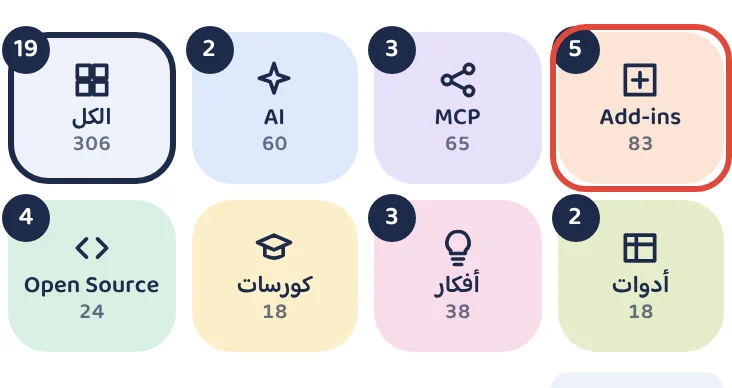
- #الرقم اللي تحت اسم القسم: عدد البوستات فيه، وبيتغير مع الفلاتر اللي مختارها.
- ●الدايرة الصغيرة على الطرف: عدد البوستات الجديدة في آخر تحديث.
3كارت البوست
دوس على الكارت نفسه يفتح الوصف، ودوس تاني يقفله. وزرار «افتح الكل» اللي فوق الكروت بيفتح أو يقفل كل الكروت مرة واحدة.
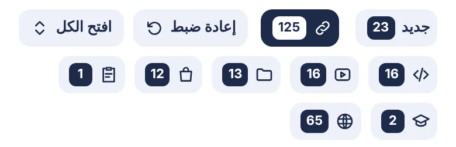
- 1اعرض الوصف.
- 2افتح البوست الأصلي على LinkedIn.
- 3ابعت البوست لزميل.
- 4افتح الأداة نفسها. الزرار ده بيظهر بس لو صاحب البوست حاطط لينك للأداة.
- 5احفظ البوست عشان ترجعله بعدين.
- 6التاجز: دوس على أي تاج يفلتر بيه.
4الفلترة بالتاجز
التاج اللي بتختاره بيظهر في شريط فوق. تقدر تختار أكتر من تاج، والموقع يعرضلك البوستات اللي فيها كلهم مع بعض (مثلاً Revit مع MCP).
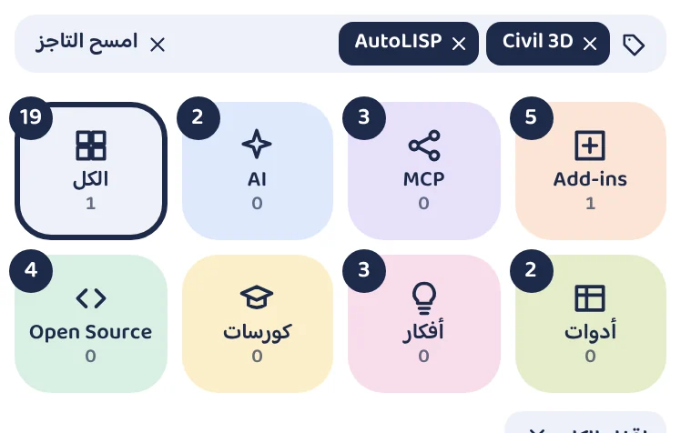
- 1تاج مختار: دوس عليه يشيله.
- 2امسح كل التاجز وارجع للوضع العادي.
5البحث
اكتب اسم أداة أو برنامج أو شخص. البحث بيشتغل جوه القسم والتاجز اللي مختارها، يعني تقدر تفلتر بتاج وبعدين تدور جواه.
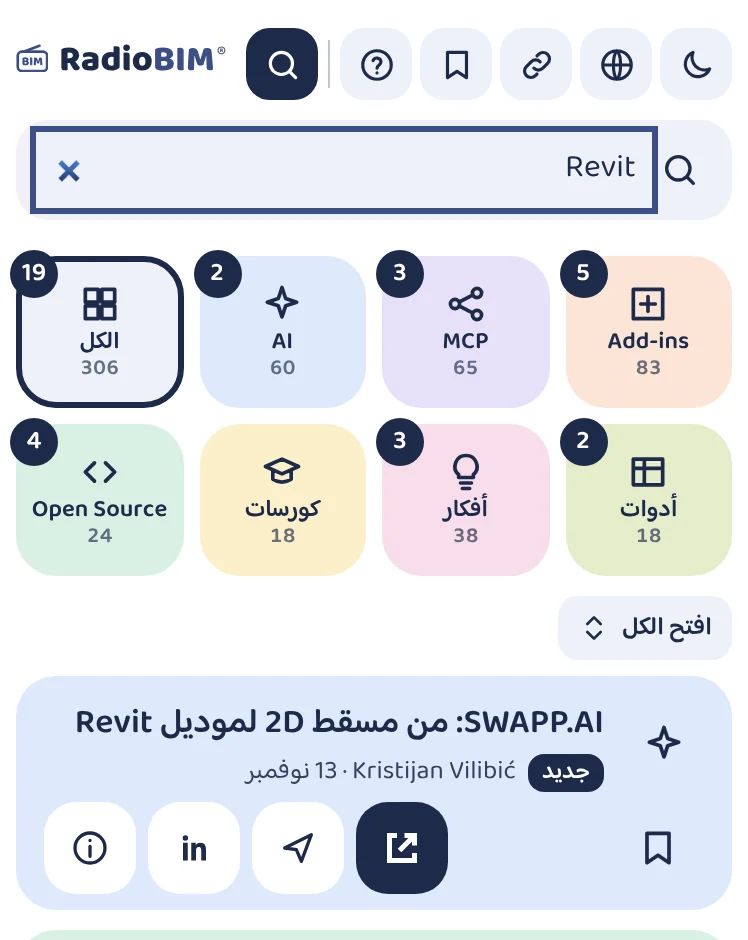
6البوستات اللي فيها أداة
زرار اللينك فوق يعرضلك بس البوستات اللي فيها زرار "افتح الأداة"، والأرقام على الأقسام بتتغير وتوريك العدد في كل قسم.
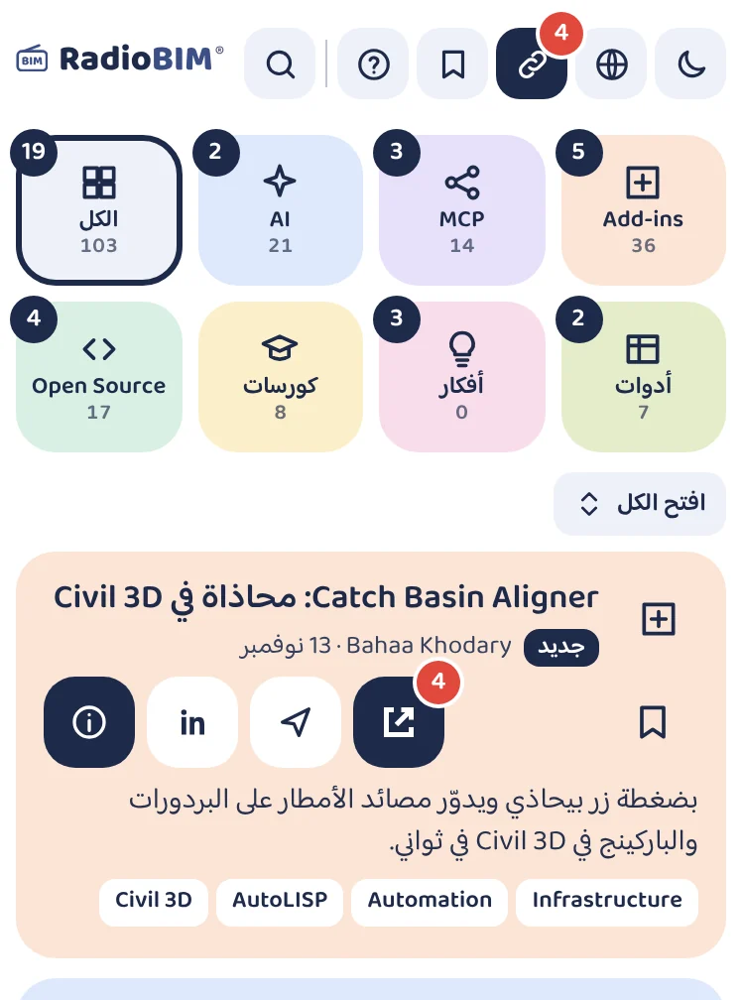
الموقع بيتحدث لوحده كل يوم. والبوستات اللي بتحفظها بتتسجل على جهازك ده بس.
How to use RadioBIM
RadioBIM scans LinkedIn every day and collects the best posts on AI, BIM, tools and add-ins in one place, in short form.
1The top buttons
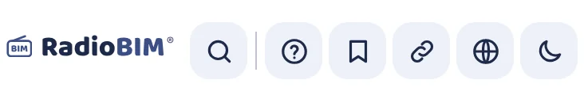
- 1Search: opens a box for a tool, a person or any keyword.
- 2This guide.
- 3Saved: shows only the posts you saved; the number is how many.
- 4Posts with a link to the tool itself (GitHub, Drive, App Store ...).
- 5English / عربي.
- 6Light or dark mode.
2Stations (sections)
Each colored tile is a section: AI, MCP, Add-ins, Open Source, Courses, Ideas and Tools. Tap one to see its posts; "All" brings everything back.
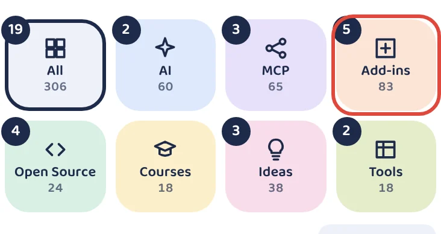
- #The number under the name: posts in that section. It follows the filters you pick.
- ●The small circle on the corner: new posts in the latest update.
3A post card
Tap the card itself to open its description, and tap again to close it. The "Expand all" button above the cards opens or closes all of them at once.
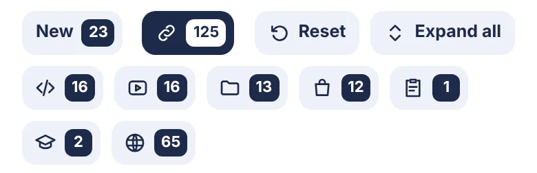
- 1Show the description.
- 2Open the original post on LinkedIn.
- 3Send the post to a colleague.
- 4Open the tool itself. This button shows only when the author shared a link to the tool.
- 5Save the post for later.
- 6Tags: tap any tag to filter by it.
4Filter by tags
Tags you pick appear in a bar at the top. Pick several and you get the posts that have all of them (for example Revit with MCP).
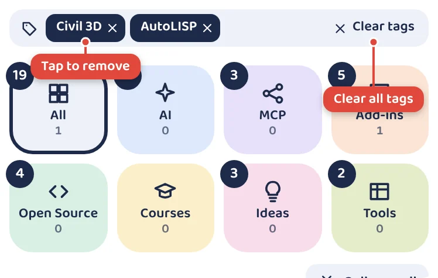
- 1A selected tag: tap it to remove it.
- 2Clear all tags and go back to normal.
5Search
Type a tool, software or person. Search works inside the section and tags you picked, so you can filter by a tag and then search within it.
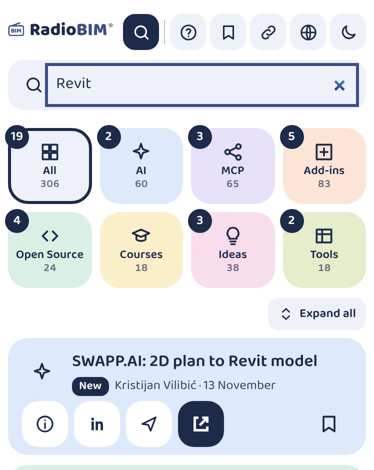
6Posts with a tool
The link button at the top shows only posts that have an "Open the tool" button, and the section numbers change to show how many each one has.
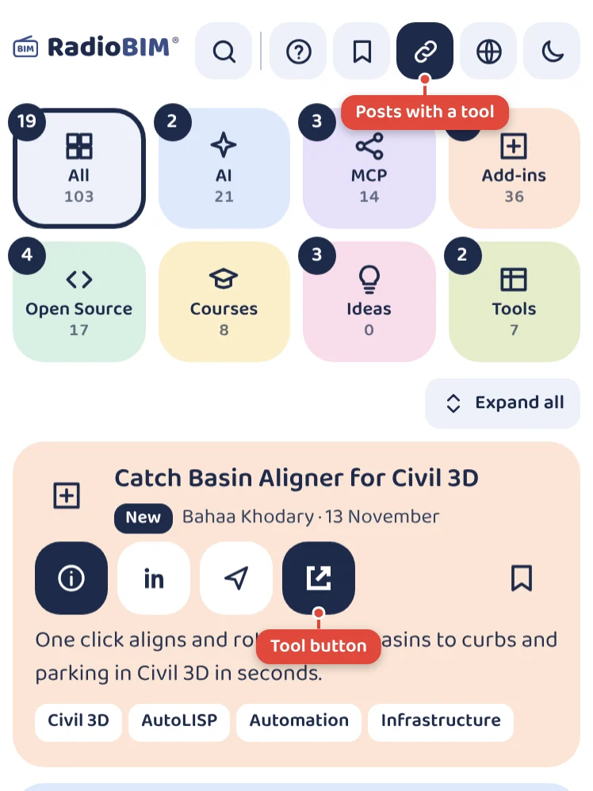
RadioBIM updates itself every day. Posts you save are kept on this device only.